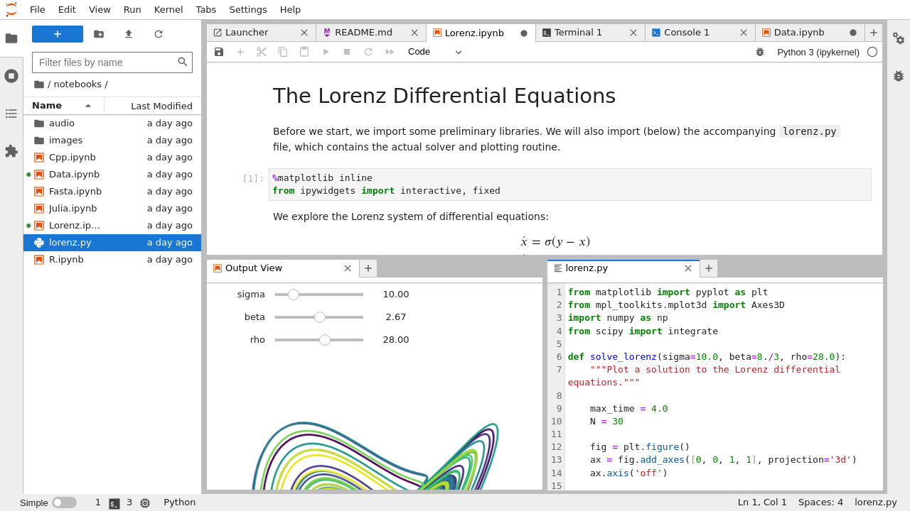
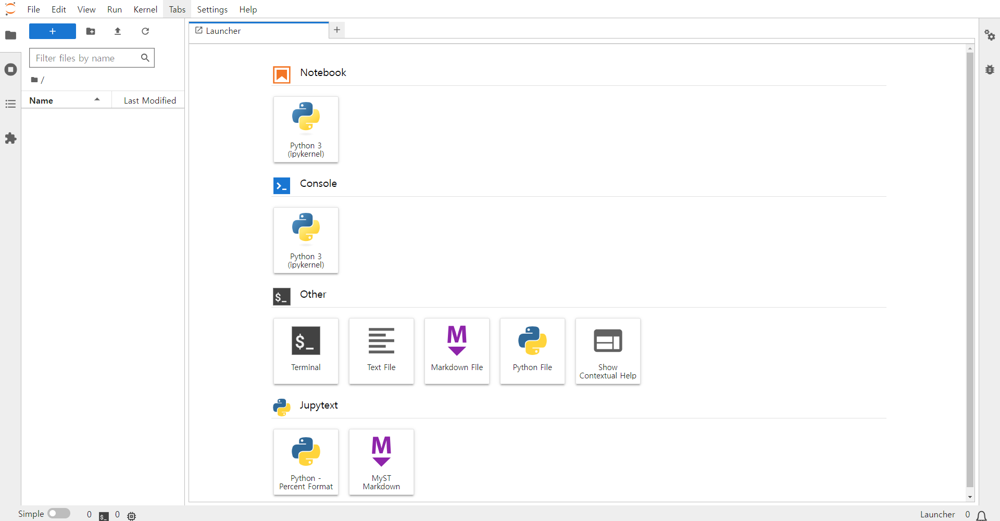
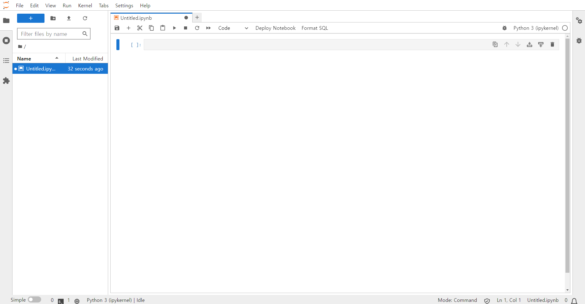
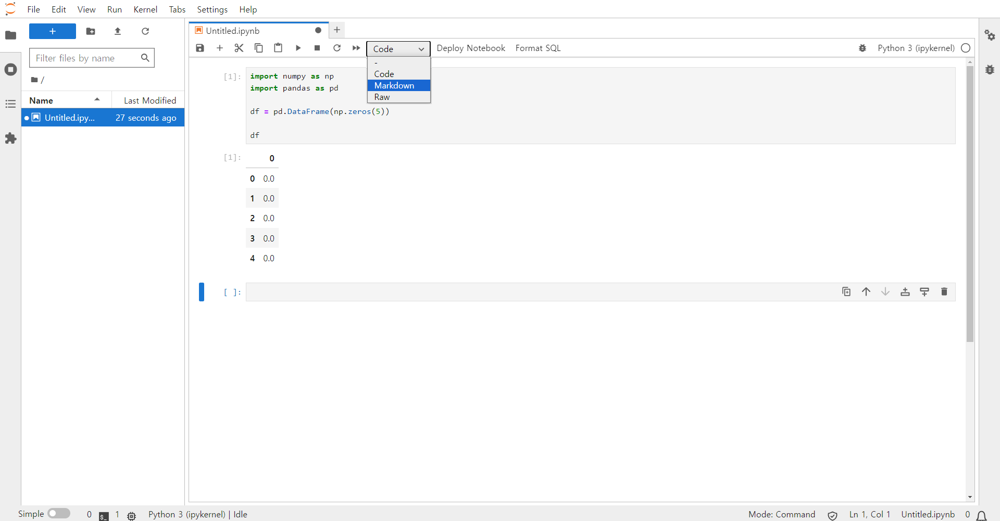
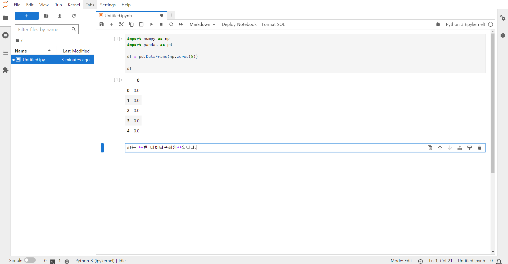
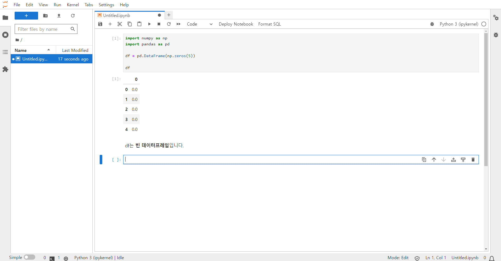
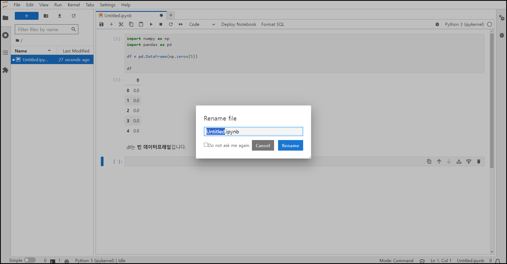

| 0 | |
|---|---|
| 0 | 0.0 |
| 1 | 0.0 |
| 2 | 0.0 |
| 3 | 0.0 |
| 4 | 0.0 |
환경 구축 3 : 주피터랩 설치 및 사용
환경구축
Python
환경 구축 3 : 주피터랩 설치 및 사용
본 글에서는 CHECK-API를 활용하기 위해 필요한 주피터랩(JupyterLab) 패키지를 설치하고 사용하는 법을 설명합니다.
준비사항
여기에서는 컴퓨터에 이미 Mambaforge 기반의 파이썬 배포판이 설치되어 있다고 가정합니다.
만약 파이썬 배포판이 설치되어 있지 않은 경우에는 다음 블로그 글을 참고하여 설치해 주세요.
또한 이 글에서 설명하는 파이썬 명령을 사용하려면 윈도우 실행 메뉴에서 “Miniforge3” > “Miniforge Prompt” 메뉴를 선택하여 Miniforge 프롬프트를 시작해야 합니다.
주피터랩(JupyterLab) 패키지 소개
주피터랩(JupyterLab)은 주피터 노트북(Jupyter Notebook)이라는 패키지의 발전된 버전으로 파이썬 코드 실행과 문서작성을 동시에 할 수 있는 노트북 형태의 웹브라우저 환경을 제공하는 패키지로 다음과 같은 특징을 가집니다.
- 웹화면에서 파이썬 코드를 작성하고 실행된 코드의 결과는 해당 웹화면에서 바로 볼 수 있습니다.
- 상호작용(interaction)이 가능한 웹 시각화를 쉽게 구현할 수 있습니다.
- 하나의 노트북 내에 코드 뿐 아니라 마크다운 형식의 문서를 작성할 수 있습니다.
주피터랩에 대한 자세한 설명은 공식 웹사이트를 참조하시기 바랍니다.
금융 데이터 분석의 경우 다양한 분석코드를 수시로 실행하여 결과를 빠르게 검토하고 그 결과를 공유해야 하는 경우가 많으므로 다른 프로그램 개발과정과 달리 짧은 코드를 쉽게 실행하고 결과를 웹화면에서 바로 시각화하여 볼 수 있는 주피터 노트북의 사용이 유리하므로 설치를 권장드립니다.
본 블로그에서는 주피터랩을 기반으로 CHECK-API를 사용한 금융 데이터 분석의 예제를 소개하므로 주피터랩을 설치하면 본 블로그의 예제를 바로 실행할 수 있습니다.

주피터랩 설치
주피터랩 패키지는 다음과 같이 pip 명령으로 설치할 수 있습니다.
pip 명령의 사용 방법에 대해서는 다음 블로그 글을 참고해 주세요.
주피터랩 서버 실행
주피터랩은 웹기반 애플리케이션이므로 주피터랩을 사용하기 위해서는 먼저 웹서버 역할을 하는 주피터랩 서버를 실행해야 합니다.
주피터랩 서버를 실행하려면 파이썬 실행이 가능한 Miniforge 프롬프트나 터미널 환경을 열고 작업 디렉토리로 이동한 다음 다음 명령을 실행합니다.
정상적으로 실행된다면 다음과 같은 메세지가 나옵니다. (세부적인 사항은 본 예제의 결과와 다를 수 있습니다.)
...(생략)...
[I 2023-12-12 14:25:09.870 ServerApp] Jupyter Server 2.12.1 is running at:
[I 2023-12-12 14:25:09.870 ServerApp] http://localhost:8888/lab?token=8248ef069e8f3c9eeb48c584bb54c4a0fa0b33af02a5fa83
[I 2023-12-12 14:25:09.886 ServerApp] http://127.0.0.1:8888/lab?token=8248ef069e8f3c9eeb48c584bb54c4a0fa0b33af02a5fa83
[I 2023-12-12 14:25:09.886 ServerApp] Use Control-C to stop this server and shut down all kernels (twice to skip confirmation).
[C 2023-12-12 14:25:09.964 ServerApp]
To access the server, open this file in a browser:
file:///C:/Users/KOSCOM/AppData/Roaming/jupyter/runtime/jpserver-276-open.html
Or copy and paste one of these URLs:
http://localhost:8888/lab?token=8248ef069e8f3c9eeb48c584bb54c4a0fa0b33af02a5fa83
http://127.0.0.1:8888/lab?token=8248ef069e8f3c9eeb48c584bb54c4a0fa0b33af02a5fa83
...(생략)...마지막 행에 보이는 것이 주피터랩을 실행할 수 있는 URL 주소입니다. 이 주소를 복사하여 웹브라우저의 주소창에 넣으면 웹프라우저에 다음과 같은 주피터랩 최초 실행 화면이 나옵니다.

주피터랩 사용
노트북 생성
주피터랩에서 코드를 실행하거나 문서를 작성하러면 노트북 파일을 생성해야 합니다.
주피터랩 화면의 메뉴에서
“File” > “New” > “Notebook”
메뉴를 선택하거나 화면상에서
“Notebook” > “Python 3 (ipykernel)”
이라고 쓰인 버튼을 클릭하면 다음 화면과 같이 신규 노트북이 생성됩니다.

노트북에서 코드 사용
노트북화면의 셀(cell)에서 파이썬 코드를 입력하고 Shift 버튼과 Enter 버튼을 동시에 누르면 코드가 실행되고 샐의 마지막 행에 있는 파이썬 변수의 값이 표시됩니다. Enter 버튼만 누르는 경우에는 코드 입력 라인이 바뀌뿐 코드가 실행되지는 않습니다.
예를 들어 다음과 같이 입력하면 값이 0으로 채워진 Pandas 데이터프레임을 생성하고 그 결과를 보여줍니다.
노트북에서 문서 사용
노트북에 코드가 아닌 문서를 넣기 위헤서는 셀을 “Code” 유형에서 “Markdown” 유형으로 변경해야 합니다. 셀 유형을 변경하려면 유형을 변경할 셀을 선택한 후 노트북 상단 버튼에서 “Code”라고 표시되어 있는 버튼을 클릭하여 “Markdown”으로 바꿉니다.

셀 유형이 “Markdown”으로 바뀌면 Markdown 형식으로 문서를 작성할 수 있습니다. Markdown 형식은 간단한 문서작성을 위한 문법으로 사용법은 다음 웹사이트를 참조하시면 됩니다.

마크다운 문서를 작성한 후에 코드 실행의 경우와 마찬가지로 Shift + Enter 버튼을 누르면 원하는 형식으로 표시됩니다.

노트북 저장
노트북을 저장하려면 상단 메뉴에서
“File” > “Save Notebook”
메뉴를 선택합니다.
신규로 생성된 노트북의 경우 다음과 같이 파일 이름을 변경하는 다이얼로그가 나타납니다. 이 다이얼로그에서 원하는 이름으로 변경할 수 있습니다.

노트북 종료
완성된 노트북을 종료하기 위해서는 상단 메뉴에서
“File” > “Close and Shut Down Notebook”
메뉴를 선택합니다.
주피터랩 서버 종료
주피터랩 사용이 완전히 끝난 후에는 주피터랩 웹 서버를 종료할 수 있습니다. 서버를 종료하려면 주피터랩 서버를 가동시킨 터미널 화면을 종료하거나 터미널에서 Control + C 버튼을 두번 연속 누르면 됩니다.